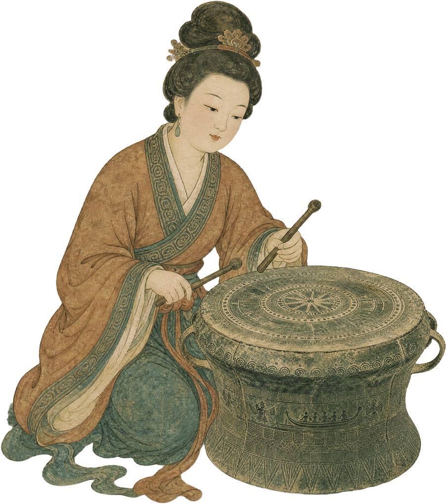

Observing Phenomena · Evolution
观象·演变

新石器
陶埙初鸣
陶埙是一种气鸣乐器，古代用于诱捕猎物，是我国最古老的吹奏乐器。
它在周代已流行，秦汉后用于宫廷雅乐。埙是一种有着7000多年历史的古老吹奏乐器，最初只有1-2个孔，音域狭窄难以演奏完整乐曲，曾一度濒临失传。

河南贾湖遗址出土陶埙（新石器时代，距今7000余年）
Observing Phenomena · Evolution
观象·演变

秦汉
宫廷雅乐
秦汉后，埙用于宫廷雅乐，在祭祀、庆典等重要场合演奏。
作为礼乐制度的重要组成部分，埙的使用有严格的规范。秦汉文献中有关于埙的记载，显示了其在宫廷音乐中的重要地位。

秦汉宫廷雅乐演奏中的埙
Observing Phenomena · Evolution
观象·演变

清代
五音孔埙
清代吴浔源根据出土陶埙复制出五音孔陶埙，并撰《埙谱》，记载多首古曲。
德州李雨村受其影响，制作出工字调、五字调埙，并流传民间。其子李孟才为第三代传人，后人李钟汾在五音孔基础上制出八音孔埙，技术上有所突破。

清代《埙谱》记载的古曲